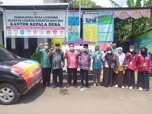
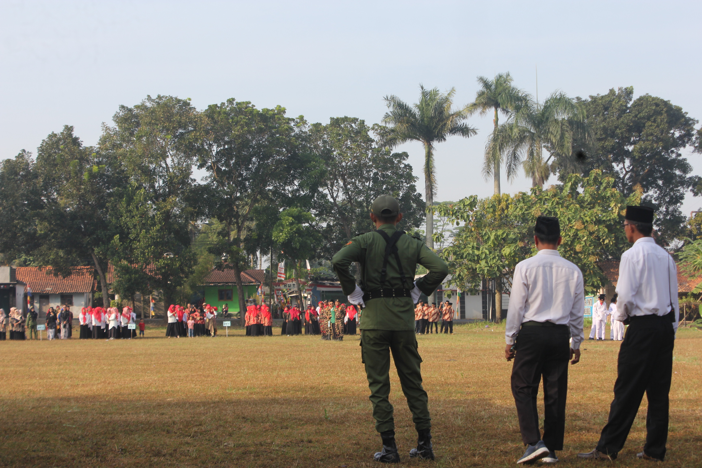
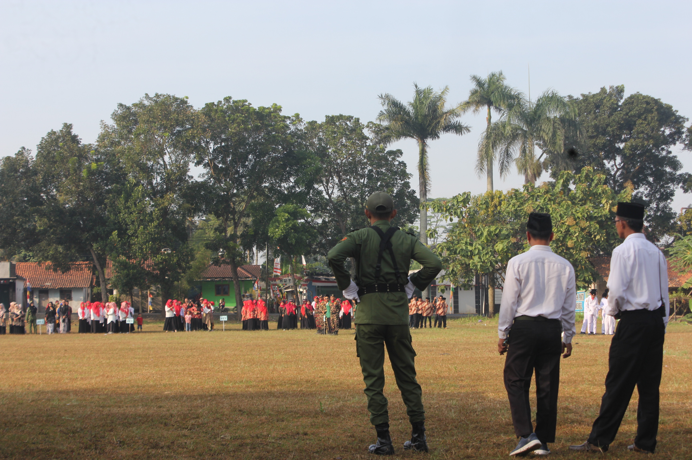

Beranda
Selamat datang di Website resmi Desa Lesmana
Profil Desa
Desa lesmana terletak di Kecamatan ajibarang, Kabupaten banyumas, Provinsi Jawa Tengah. Luas wilayah desa lesmana terdiri dari 208,129 hektar dengan mayoritas penduduknya ber mata pencaharian di sektor pertanian.
Visi dan Misi Desa Lesmana
Visi
Terwujudnya Desa Lesmana yang aman dan sejahtera melalui tata kelola Pemerintahan yang baik, akuntable,transparansi, dan bermatabat berdasarkan religius dan kebangsaaan
Misi
- Mewujudkan pemerintahan yang baik, akuntabel dan transparan.
- Melaksanakan program kegiatan pembangunan disegala bidang denagn transparansi,skala prioritas dengan berpedoman pada keadilan dan pemerataan.
- Mewujudkan dan meningkatakan Kegiatan Pembinaan Kemasyarakatan.
- Melaksanakan dan meningkatkan Pemberdayaan Masyarakat.
- Mewujudkan dan melaksanakan tanggap darudat Sosial Kemasyarakatan.
Layanan Desa
- Pelayanan Administrasi
- Pertanahan
- Wisata Desa
- Layanan Kesehatan Desa
Galeri Desa

 
